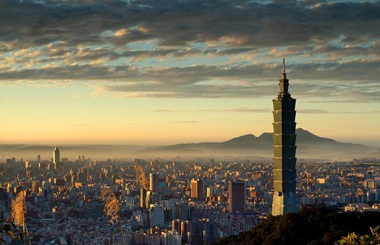

As a resident of Taipei, Taiwan. One of our most iconic landmarks is Taipei101. In addition, there are some fancy buildings and resturants around that area. Whether you're looking for breathtaking views or mouthwatering flavors, Taipei has something to offer for everyone.
